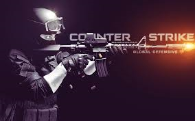
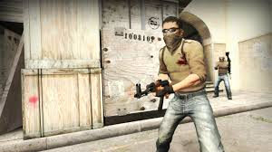

Знайомство з грою

Counter-Strike: Global Offensive, CS:GO (укр. «Контрудар: глобальний наступ») - комп'ютерна гра, розроблена компаніями Valve i Hidden Path Entertainment; остання основна гра в серії ігор Counter-Strike. Зайшовши у цю гру, мене охопило відчуття ніби я в реальному світі. Отже, мабуть багато хто грав у гру Half-Life 2 або Counter-Strike 1.6. Counter-Strike:GO, це те саме продовження цієї серії ігор. У грі присутні дві команди: Терористи та Спецназ. Ціль команди Терористів - нейтралізувати всю команду противника або закласти бомбу на любій із двох вказаних точок. Ціль команди Спецназу - нейтралізувати команди противника або розмінувати закладену терористами бомбу. (Детальніше)...
ІСТОРІЯ МОЇХ БИТВ

Gameplay
Грати у Counter-Strike: Global Offensive я почав майже одразу, як вона вийшла, тобто у 2013 році. Перші враження були дуже позитивними:
1) Графіка дуже хороша.
2) Тактика і можливості.
3) Класна зброя.